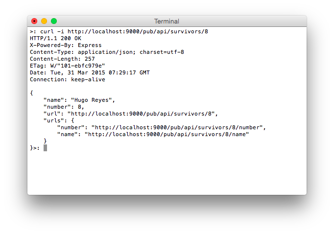

Usage example
This is a complete usage example demonstrating espressojs. It will show you
- how to setup a simple JSON REST API
- how to manage resources
- how to expose it using express
It is structured so that you can code the example while reading the explanations.
If you just want to see the full example checkout the file on GitHub.
Setup
Assuming node and npm are already installed and runnable there are still some packages that have to be installed:
- espressojs will provide the container for the API
- express will be used for managing HTTP stuff
- espressojs-express will bring both together
- body-parser that converts request bodies to JSON
- and we need some kind of utility library (because we are lazy), I will go with lodash
You can install them with npm.
npm install --save express espressojs espressojs-express lodashThe complete code will be save in a single file, I named it index.js.
Create and open it with your preferred editor.
Let's start coding.
Importing
At first we have to import all the packages we have just installed.
var Espresso = require('espressojs');
var express = require('express');
var espressoexpress = require('espressojs-express');
var bodyParser = require('body-parser');
var _ = require('lodash');Creating a new API
Now, let us create a new espressojs instance.
var api = new Espresso({
port: '9000',
apiRoot: '/pub/api'
});We tell espressojs that our API will be listening on port 9000 and that the
API will be available under /pub/api.
There are a couple of default options that won't be changed,
e.g. the hostname of the server (localhost) and the rewrite
location for empty paths (/) - I'll come back to that later.
People storage
Now that we have espressojs ready for us, let's put some resources in it. It would like to have a list of people and each entry is going to have a name and a number that should be accessible through the API.
var people = [
{ name: 'John Locke', number: 4 },
{ name: 'Hugo Reyes', number: 8 },
{ name: 'James Ford', number: 15 },
{ name: 'Sayid Jarrah', number: 16 },
{ name: 'Jack Shephard', number: 23 }
];Here, these entries are stored in an array. However, in production
you would normally use a database for that.
This array won't be accessible directly but we will provide REST endpoints
for getting and manipulating it.
Serializer function
As described in the documentation a special serializer function is used to transforms whatever the API produced into something the client can handle - e.g. JSON or XML. It is invoked after every resource handler.
This allows you to write handlers that pass around JavaScript values like objects or arrays which are then automatically serialized. This way, you do no longer have to care about that - you will see that later!
We will overwrite the dump default serializer with a function that creates JSON from the API result and updates the content type.
api.setSerializer( function(req, res, api, value) {
res.headers['Content-type'] = "application/json";
return JSON.stringify(value, null, 4);
});Resources!
Now it's time for some resources. We use the .resource() function
for that. It takes a route pattern one or multiple handlers, an optional configuration
object and an optional context for this.
API root
We begin with the root resource that is often used to create some meta information.
api.resource('/', function(request, response, api) {
var url = api.linkTo(this);
var users = api.linkTo({name: 'survivors'});
// This object is forwared to the serializer function
return {
title: 'My fancy API',
version: '1.0.0',
message: 'hello, world',
api: url,
users: users
};
});The function will handle the root resource / for us (first argument).
It also gets a handler function that will be invoked when the resource is requested. Neither the configuration object nor the context argument are given here - we don't need them.
Let's take a look at the function. A handler function normally takes four arguments:
function( request, response, api, value)
requestis a Request object containing information about the request including the current path, the protocol and parameters.responseis a Response object containing information about the created request. This object is shared between all handlers in a cascade chain. Thus, if you have multiple handlers invoked after each other (you will see that later) changes made by the previous handler are visible to the current one. This allows you to overwrite stuff without thinking about other handlers.apiis the espressojs API objectvalueis the value returned by the previous handler. This argument is omitted here because there will never be any previous handler invoked.
The function creates an URL using the .linkTo() function. This function returns an
URL depending on whatever you provide to it. Here, it returns a hypermedia link to the current
resource. Please read more about .linkTo() here.
.linkTo() is used again to create a link to an URL named survivors. This resource
will be defined later.
Last but not least, we return an object with some infos. This will be forwarded the serializer function that converts it into JSON. espressojs-express will pass it to express that will return it to the client.
More magic is happening here!
Our API is available at /pub/api and the handler we
have just defined handles /, thus /pub/api/.
It may happen that someone requests /pub/api without the trailing slash
that is not handled by the resource handler!
This might happen quite often, thus espressojs has an
option named rewriteEmpty.
It contains a resource path such requests should be forwarded to. By default it forwards to / and since
we did not overwrite that option in the constructor or using the options interface the handler
for / will do that. Even more, we do not have to care about that, everything happens automatically.
Survivors
Now its time for some cascading handlers! We create by defining a resource /survivors.
Since it should be possible to create new items we also need to support POST requests. Since we do not want
to check the request method in the handler we provide an object with functions for GET and POST requests.
api.resource('/survivors', {
get: function(req, res, api) {
return _.map( people, function(survivor) {
return {
name: survivor.name,
number: survivor.number,
url: api.linkTo({name: 'survivor'}, {number: survivor.number})
};
});
},
post: function(req, res, api) {
var person = req.body;
if( ! _.isString(person.name) || _.isEmpty(person.name) ||
! _.isNumber(person.number) ) {
res.status = '400';
return;
}
res.status = '201';
people.push( person );
}
}, {name: 'survivors'});The GET handler
Since /survivors is a collection we want to return
an array with all the survivors in it. But in addition to that, we also want
to provide a hypermedia link to every survivor.
So, we map over the survivors array, copy values (we do not want to touch original ones)
and add a .url key containing a link. We use the .linkTo() again, we also
provide a name to a resource (that will be defined later) but this time we add a second argument, an
object with key-value-mappings telling .linkTo() to replace the URL placeholder :number
with the value in survivor.number.
The POST handler
Now that we have a handler that can be used to obtain the collection we want to add the ability to add new items. By definition, sending a POST request to a collection creates a new item in it, the request body has to contain information about it. Thus, we add a handler for POST that checks the requests body and creates a new item if it is valid. The status code will be used to indicate if everything is okay (201) or if the client did something wrong (400).
Naming
In this case, we also provide the optional options argument
and provide a name that identifies the resource. If you look again at the handler for / you will see that this
resource has been referenced there.
Accessing items
Obatining the colelction only is not sufficient enough, we also want to be able to access a single
entry only. Looking at the previous example you see that we referenced a resources named survivor.
To identify the entry in the collection we also need some kind of argument that tells us what item to retrieve.
So, we create the resource handler for /survivors/:number where :number is a placeholder
that will be replace with whatever the client requested.
api.resource('/survivors/:number', function(req, res, api, users) {
var num = parseInt(req.params.number); // :number
var o;
for( var index in users )
if( num === users[index].number ) {
o = users[index];
o.urls = {
number: api.linkTo({name:'survivor-number'},{number:o.number}),
name: api.linkTo({name:'survivor-name'},{number:o.number})
};
return o;
}
res.status = '404';
res.body = {error: 'Not found'};
}, { name: 'survivor' } );Again, we provide a name and a function for all request types. What happens in the function:
- We retrieve the URL placeholder value using
request.params.number. Since this will be a string we convert it into an integer - Next, we iterate over all the fourth argument of the function
users(more details below).- If we find an entry with the number we return an object that contains an object
urlscontaining hypermedia links to related resources. At this point, we are again overwriting URL placeholders with the number of the entry - We return the object we found and use the implicit return code
200indicating everything's fine
- If we find an entry with the number we return an object that contains an object
- If we were not able to find anything we return a
404
So chaining. Very cascading. Much DRY.
Where does the fourth argument come from? And what does it contain?
Here comes espressojs' cascading approch into play. If a client requests /survivors/4
the request will be handled in the following order:
- Handler for
/ - Handler for
/survivors - Handler for
/survivors/:numberwithnumber=4
The first handler is completely ignored since /survivors does not use the fourth argument.
However, the return value of /survivors is passed to /survivors/:number that filters it and adds new information.
It does not have to work with the global array in any way here.
And as you can see, everything generated in /survivors is already included in the response.
You do not want to use cascading?
No problem! You can turn it off globally or per handler.
So, if you did not want the root handler to be executed for every request, you could set the option cascading
to false for the handler /survivors.
Name, please.
Now, we want to add the handler named survivor-name supposed to return an object containing
the name of the item. It also uses the URL placeholder :number and relies on cascading.
api.resource('/survivors/:number/name', function(req,res,api,user) {
if( 'undefined' === typeof user )
return;
return { name: user.name };
}, {name: 'survivor-name'});This handler is quite short, isn't it?
The argument user contains the item returned by the handler for /survivors/:number.
In other words: it contains the item that is requested and all we have to do is to return the name!
There is an important detail here: we check for undefined first. Look again at the previous
handler: if no item was found, it sets the response code to 404 and returns undefined.
So, if we get undefined here, response.status will already be set to 404 and response.body
contains an error message.
Breaking the chain
It would also be possible to stop the execution of any handler after /survivors/:number if the item
could not be found.
Since handlers can return promises, returning a reject promise will stop the execution.
var deferred = api.deferred();
deferred.reject('so reason');
return deferred.promise;Do you have a number?
Okay, let's add a handler that returns an item's number. I think I do not have to say much about what it does.
api.resource('/survivors/:number/number', function(req,res,api,user) {
if( 'undefined' === typeof user )
return;
return { number: user.number };
}, { name: 'survivor-number' } );Echo service
Playing with people on an island got a bit boring. Let's write an echo server that takes
a message and returns it, if it is valid. It will be available at /echo.
api.resource('/echo', function(request, response, api) {
if( _.isString( request.body.message ) ) {
return { echo: request.body.message };
}
response.status = '400'; // Bad request
return { format: "{ message: $message }" };
});Everyhing as usual here: we validate and return something useful or tell the client that its request does not look like what we wanted it to look like.
Serving
There are now some resources in our API but at this point a client could not access them since we have no server running. This is going to be changed now.
var server = express();First, we create a new HTTP server using express.
server.use( bodyParser.json() );Then, we tell express to use a middlware that makes sure client's request bodies are available in JSON.
server.use('/pub/api*', espressoexpress(api) );Time to connect espressojs with express using espressojs-express. We give it the API instance
and pass its return value to express telling it that we want to use that middleware whenever
a request is made to /pub/api*.
Do not for get to add the astericks at the end of the URI otherwise only /pub/api would be
handled by us.
However, this astericks is the reason we hve to use the rewriteEmpty options described earlier.
Now it's time to start the server
server.listen(9000);Open a terminal an issue node index to run the index.js file with node. The server
will then be listening on port 9000 so that you can access it at http://localhost:9000/pub/api
Using it
While the browser is good to explore the API (especially since we use hypermedia links!) it offers
only limited functionality. So, let's switch to the terminal and use curl to play aroud a bit.
At first, let's take a look what happens if we request the API root
curl -i http://localhost:9000/pub/apiWe use the -i flag here that prints out the response headers. As you can see, we get what
we returned in the handler function. The status code is 200 and the content type is set to application/json.
Since the handler written for / does the same for all request methods you will always
get the same result. You can try that by adding -X POST or -X OPTIONS to the request.
If you send a HEAD request to the API root, it will also return that result. However, you will only get the headers since express removes the body for us.
Now, let's request an item.

curl -i http://localhost:9000/pub/api/survivors/8
Neat!
Let's add something
As I said before, we have to send a POST request to /survivors containing some JSON to add an item.
Thus, we tell curl that we send application/json and what JSON to send. The API then tells us that the
item has been created successfully.
curl -X POST -d '{ "name": "Jin-Soo Kwon", "number": 42 }' \
-H "Content-type: application/json" \
-i http://localhost:9000/pub/api/survivors
If you now request /survivors you will see the new entry.